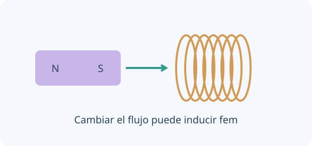

Una idea, un modelo y una experiencia para contrastarlo. Comprobá cada explicación y volvé a intentarlo cuando lo necesites.
0 de 4 lecciones comprobadasAvance guardado en este navegador
Contenidos y correspondencia con el programa
Imanes, campo de corrientes y fuerzas magnéticas
Fuerza entre corrientes, motores y dínamos
Flujo, Faraday, Lenz y transformadores
Corriente alterna, semiconductores y superconductividad
Normas OAF 2022, programa esquemático y contenidos conceptuales/procedimentales, pp. 15–16. Ver fuente y alcance.
01
COMPRENDÉ Y COMPROBÁ
Tu ruta de estudio.
LECCIÓN 1 / 4 · LEÉ, APLICÁ Y COMPROBÁ
Campo magnético y fuerzas
Empezá desde la idea.
Un campo magnético interacciona con imanes, corrientes y cargas en movimiento. La fuerza sobre una carga depende también de su velocidad y dirección, no solo del campo. La regla vectorial ayuda a distinguir perpendicularidad de una atracción siempre hacia el imán.

Movimiento relativo y geometría pueden cambiar el flujo enlazado. La sola presencia de un imán con flujo constante no induce fem.
Un imán permanente genera un campo magnético. Alrededor de un conductor recto con corriente, el campo rodea el cable; una regla de mano derecha conecta corriente convencional y sentido del campo. Corrientes paralelas del mismo sentido se atraen, bajo condiciones ideales largas.
La fuerza magnética sobre una carga móvil es q v⃗ × B⃗: depende de velocidad y orientación. Es perpendicular a la velocidad y por sí sola no cambia la rapidez de la partícula. Un campo eléctrico, en cambio, puede hacer trabajo directo sobre una carga.
|Fm| = |q|vB sinθ · Fconductor = BIL sinθ
INTENTÁ RESOLVER ANTES DE MIRAR
Un tramo de 0,20 m lleva 2 A perpendicular a B = 0,50 T.
Tu desafío: Calculá el módulo y explicá por qué cambiar el sentido de corriente invierte la fuerza.
Ver el ejemplo resuelto paso a paso
F = BIL.
F = 0,20 N; su dirección se obtiene con el producto vectorial.
LECCIÓN 2 / 4 · LEÉ, APLICÁ Y COMPROBÁ
Inducir es cambiar flujo
Empezá desde la idea.
El flujo magnético combina campo, área y orientación. Una fem inducida aparece cuando cambia el flujo enlazado con un circuito, no por la sola presencia de un imán quieto. Lenz fija un sentido que se opone al cambio que la produce.
El flujo magnético depende del campo, del área y del ángulo entre campo y normal de la superficie. Una variación de flujo enlazado induce fem; un flujo grande pero constante no basta. Faraday relaciona la tasa de cambio con el voltaje inducido.
Lenz fija el sentido: la respuesta se opone al cambio que la origina. No significa que se oponga siempre al campo existente. Si un imán queda quieto respecto de la bobina en un campo estacionario, la fem inducida se anula; moverlo más rápido puede aumentar la señal.
Φ = BA cosθ · ε = −N ΔΦ/Δt
INTENTÁ RESOLVER ANTES DE MIRAR
El flujo por espira aumenta 0,002 Wb en 0,10 s, con N = 50.
Tu desafío: Calculá la fem y distinguí flujo de tasa de cambio de flujo.
Ver el ejemplo resuelto paso a paso
El módulo de fem es 50×0,002/0,10.
El módulo de ε es 1,0 V; el signo depende del sentido de referencia y Lenz.
LECCIÓN 3 / 4 · LEÉ, APLICÁ Y COMPROBÁ
Motores, generadores y corriente alterna
Empezá desde la idea.
Un motor convierte energía eléctrica en movimiento, mientras un generador convierte trabajo mecánico en energía eléctrica. La corriente alterna cambia con el tiempo. Un transformador ideal relaciona tensiones y corrientes, pero necesita flujo variable y conserva potencia en su aproximación ideal.
Un motor convierte energía eléctrica en mecánica mediante fuerzas y torques; un generador convierte trabajo mecánico en energía eléctrica por inducción. No producen energía de la nada. Un transformador ideal transfiere energía entre bobinas mediante flujo variable.
Una tensión sinusoidal cambia de signo; su valor eficaz es el de una tensión continua que produce igual potencia media en una resistencia. En un transformador ideal V₂/V₁ = N₂/N₁ y potencia de entrada igual a salida. Una corriente continua estable no mantiene la transformación ideal por flujo variable.
Vef = Vmáx/√2 para seno · V₂/V₁ = N₂/N₁
INTENTÁ RESOLVER ANTES DE MIRAR
Transformador ideal con N₁ = 200 y N₂ = 100, V₁ef = 12 V.
Tu desafío: Calculá el voltaje de salida y explicá el balance energético ideal.
Ver el ejemplo resuelto paso a paso
V₂ef = 12×100/200.
V₂ef = 6 V; si entrega más corriente, no implica crear potencia.
LECCIÓN 4 / 4 · LEÉ, APLICÁ Y COMPROBÁ
Semiconductores y superconductividad
Empezá desde la idea.
Un semiconductor permite controlar conducción mediante composición y condiciones, con electrones y huecos en el modelo. Un superconductor es otro fenómeno: presenta propiedades especiales bajo condiciones críticas. No son dos nombres para un material que conduce simplemente «mejor».
En un semiconductor, la estructura electrónica permite controlar portadores mediante dopaje, temperatura o luz. Una unión p–n conduce de manera asimétrica y permite rectificación; el modelo de diodo ideal es una aproximación, no una ley de Ohm para todos los dispositivos.
Un superconductor presenta resistencia eléctrica nula en ciertas condiciones y efectos magnéticos característicos como expulsión de flujo. Existen límites de temperatura, campo y corriente. Superconductividad no significa que un aparato completo sea 100 % eficiente ni que cualquier metal frío alcance ese estado.
Resistor óhmico: V = IR · Un diodo no tiene una R constante para todo V
INTENTÁ RESOLVER ANTES DE MIRAR
Un circuito conecta un diodo ideal y resistencia a una fuente alterna.
Tu desafío: Explicá por qué el diodo no se describe como el mismo resistor en ambos sentidos.
Ver el ejemplo resuelto paso a paso
En una orientación conduce solo en un semiperíodo.
La señal de corriente se rectifica; la resistencia todavía disipa energía.
02
PREDECÍ · ARMÁ · MEDÍ · EXPLICÁ
La física en tus manos.
Preparando el laboratorio virtual…
03
LISTO PARA PONER A PRUEBA TU COMPRENSIÓN
Practicá, revisá y volvé a la idea.
Ocho preguntas por unidad, con áreas y niveles seleccionables. La autoevaluación avanza al guardar; al final podés revisar explicaciones y reintentar errores. Es práctica local, no un examen oficial ni un envío al panel docente.